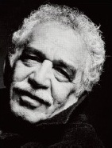

Kolombiyalı Gabriel Garcia Marquez, 20. yüzyılda dünyanın dikkatini Latin Amerika edebiyatına çeken bir yazardı. Romanlarıyla kısa hikâyelerinde, kendi kıtasının tarihini ve insanlarını, gerçek olayları fantezi ve efsane ile birleştiren bir gözle inceledi.

1928’de Kuzey Kolombiya’nın Arataca kasabasında doğan Garcia Marquez, özellikle ailenin yaşlıları tarafından tekrar tekrar anlatılan aile hikâyeleriyle büyüdü. Kolej eğitiminden sonra çeşitli yabancı yayın ajanslarında gazetecilik yapıp Fransa’da, Venezuela’da, Birleşik Devletler’de ve Meksika’da yaşadı. 1950’lerin ortalarında kurgusal yazılar yazmaya başladı ve ilk büyük eseri olan kısa hikâye koleksiyonu Albaya Kimseden Mektup Yok, 1961’de basıldı.
Garcia Marquez’in başyapıtı, şüphesiz, kurgu kasaba Macondo’da altı nesle yayılan bir masal olan Yüzyıllık Yalnızlık (1967) romanıdır. Kasabanın ve kurucularının –Buendia ailesi– tarihi, tümüyle Latin Amerika’nın tarihî gidişatına ayna tutar: Macondo’nun dış dünya ile artan şekilde temasa geçmesiyle, bozulmamış pastoral soyutlanmadan iç savaşa, diktatörlüğe, işçi karışıklıklarına ve moderniteye geçişe eşlik eden diğer zorluklara çeşitli geçişler yapar. Romanda tarih, hem bireylerin hem de grupların aynı hataları tekrar ve tekrar yapışı gibi –Garcia Marquez’in Buendia ailesinin farklı nesillerindeki karakterlere aynı isimleri vererek vurguladığı bir gerçek– döngüsel olarak ilerler.
Garcia Marquez’in eserlerinin çoğu, büyülü gerçekçilik –oldukça gerçekçi yapılan betimlemelerin fantastik ve doğaüstünün belirgin unsurları ile bir birleşimi– olarak isimlendirilen bir türü örnekler. Yüzyıllık Yalnızlık’ta olan onca şey arasında Macondo, beş yıl süren şiddetli bir yağmur fırtınasını, bir karakterin ölümünün haberi üzerine gökten sarı çiçekler şelalesinin akmasını ve domuz kuyruklu bir bebeğin doğumunu görür. Büyülü gerçekçilik bağlamında bu olayların çoğu normal kabul edilir ve karakterler bunları yorum yapmadan veya endişelenmeden izlerler.
İki diğer önemli yayınından sonra (Başkan Babamızın Sonbaharı (1975) ve Kırmızı Pazartesi (1981) romanları) Garcia Marquez 1982’de edebiyat dalında Nobel Ödülü’ne layık görüldü. Eserleri, orijinal dili İspanyolca’da ve diğer dillerde milyonlarca kişiye ulaştı, onu hem eleştirel hem de popüler başarıyı sürdüren pek az çağdaş romancının arasına soktu.
EK BİLGİ:
1. Garcia Marquez’in eserlerinin çoğu, aynı karakterlerden ve yerlerden bazılarının farklı hikâye ve romanlarda birden karşınıza çıkmasıyla, aynı kurgusal evrende yer alırlar.